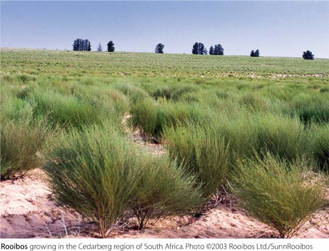

A vörös fokföldirekettye és teája
Dél-afrikai cserje.
Zsenge hajtásaiból készülő főzetét az ottani lakosság évszázadok óta issza kedvező élettani hatásai és finom íze miatt.
Neve afrikaans nyelven „vörös bokrot” jelent.
A növény leírása
A vörös fokföldirekettye 1-1,5 méter magas cserje, de termesztésben 50-60 centiméter nagyságúra visszavágják.
Levelei, melyek szerteágazó, hosszú, hajlékony ágakon találhatóak meg, tűszerűek: hosszuk 1 cm - 5 cm között változik, 1 mm vastagok és enyhén szőrösek.
Októberben virágzik, pillangó formájú, sárga virágai rövid nyélen ülnek. A termése vastag héjú, sárgásbarna színű, kemény magva van.
A cserje meleg- és vízigényes.

Cederberg régió hegyekkel és völgyekkel tarkított táján terem a vörös fokföldirekettye.
Feldolgozása
A roiboos tea alapanyagát a növényről annak 1-1,5 éves korában szedik le először. Zsenge hajtásait a nyári hónapokban szüretelik. A szüretelése, feldolgozása kézzel történik.
Afrika lakosai eredetileg is kézzel szedték le a növényi részeket, majd kőlapon összezúzták és hagyták megszáradni.
Ma is zúzzák, aprítják, halmokba rakva fermentálják. A fermentálás közben kapja meg jellegzetes vörös színét.
A teát gőzöléssel sterilizálják, megszárítják, majd átrostálják, végezetül pedig csomagolják.
A levelek mellett a fás részek és a kéreg is hasznosítható.
Teája
Az 1700-as évektől van írásos feljegyzés európai használatáról, évszázadok óta jelen van az orvoslásban is. Nyugat-Európában az 1990-es évek közepétől kezdve rohamosan terjed a fogyasztása, mert élvezeti teaként a modern életmód kitűnő kiegészítőjének bizonyult. A legnagyobb roiboos tea fogyasztók Németország, Hollandia, Japán és Amerika.
Koffeinmentes, ásványi anyagokban (kalcium, mangán, fluor, cink, magnézium, réz) gazdag, cserzőanyag-tartalma alacsony, antioxidáns tulajdonságánál fogva lassítja az élettani öregedést. Reggel élénkítő, nappal szomjoltó, este nyugtató hatása van.[forrás?]
Jellegzetes, frissítő (fűszeres) íze a fekete teáénál édesebb. Mélyvörös színű.